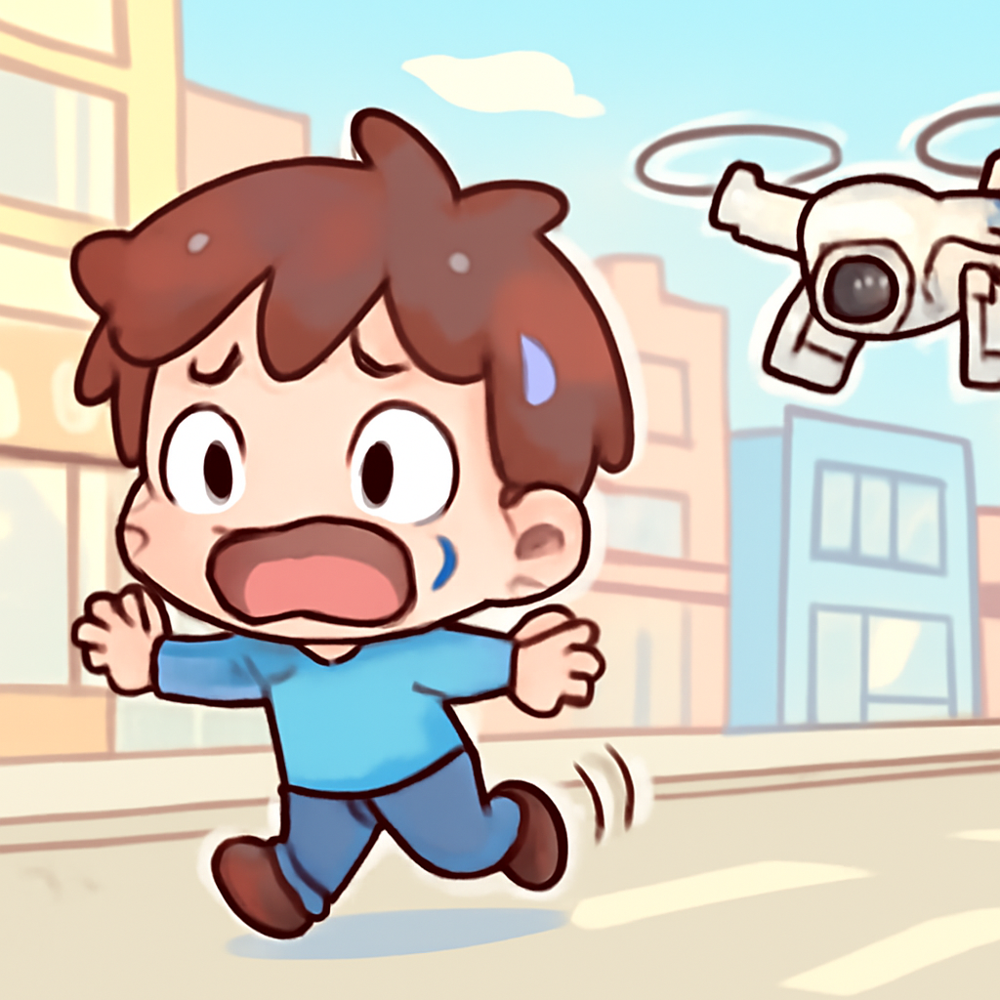
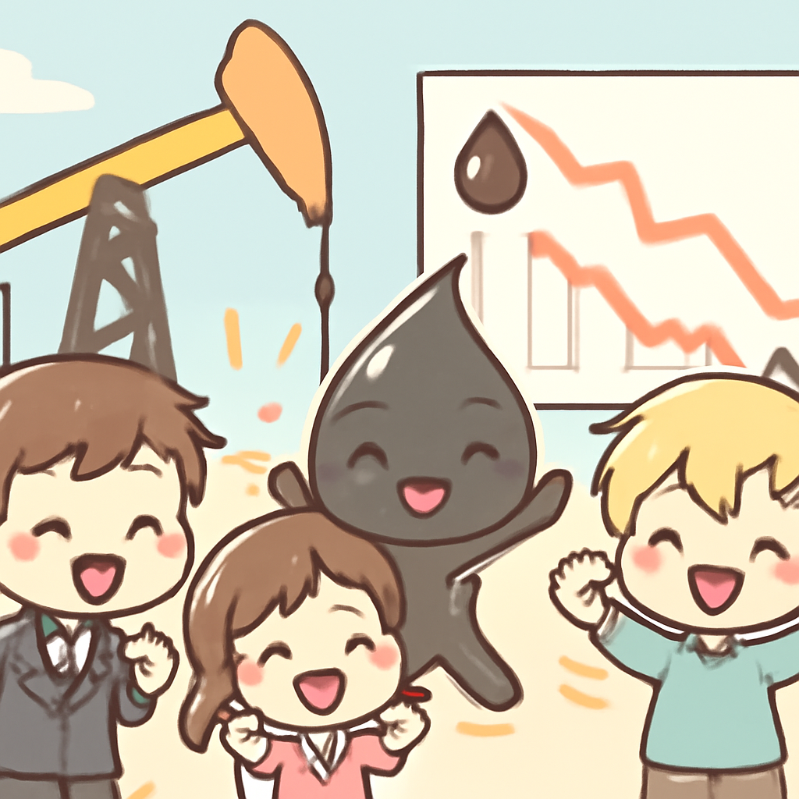
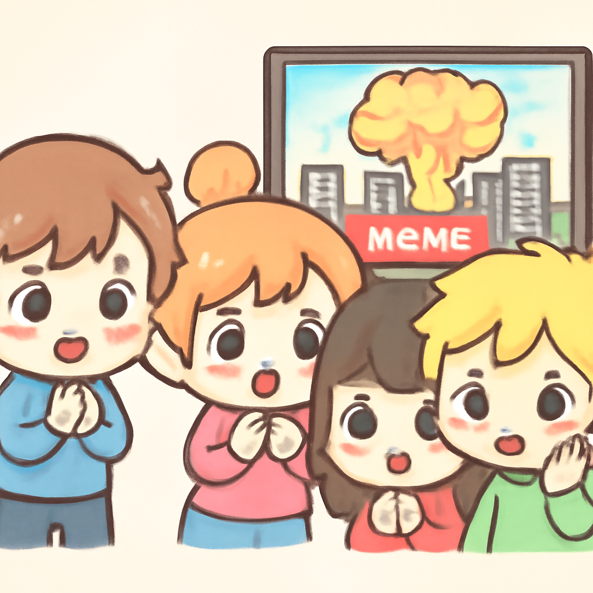

其一 · 烏克蘭基輔 · 俄烏戰爭中的無人機襲擊
烏克蘭指控俄羅斯無人機攻擊平民

在烏克蘭基輔，最近出現了一段影片，顯示一名街頭小販被俄軍無人機追逐，烏方認為這是戰爭罪行，因為這樣的行為無疑是對平民的攻擊。這件事讓人不禁想問：戰爭中，平民的安全到底去哪裡了？
🔗 原始新聞 ↗
2026-08-05 · 以古觀今，以笑抗愁
烏克蘭指控俄羅斯無人機攻擊平民

在烏克蘭基輔，最近出現了一段影片，顯示一名街頭小販被俄軍無人機追逐，烏方認為這是戰爭罪行，因為這樣的行為無疑是對平民的攻擊。這件事讓人不禁想問：戰爭中，平民的安全到底去哪裡了？
🔗 原始新聞 ↗
霍爾木茲海峽有望重新開放，油價下滑

隨著美國官員表示有望重啟霍爾木茲海峽的運輸，全球油價也跟著下滑。這對於依賴能源的國家來說，無疑是一個好消息，讓人心中稍微鬆了一口氣。希望這波好運不會像油價一樣，漲漲跌跌！
🔗 原始新聞 ↗
西班牙迅速遣返大部分非法移民
西班牙在塞烏塔的移民危機中，迅速回應，大約七萬名非法入境者被遣返至摩洛哥。這次事件再次引發對移民政策的討論，讓人思考：在保護國家安全與人道主義之間，我們該如何平衡？
🔗 原始新聞 ↗
法國政府請郵差關心老人，對抗熱浪
面對持續的高溫，法國政府要求郵差檢查老人的健康，防止熱浪造成的傷亡。這個舉措不僅展現了社會的關懷，也提醒我們在炎熱的夏天要時時關心身邊的人。或許郵差們也成了夏日的英雄！
🔗 原始新聞 ↗
烏克蘭空襲俄羅斯造成多名死傷

在俄羅斯莫斯科，烏克蘭的空襲導致五人喪命，這場衝突再度升級。隨著戰事持續，無辜平民的生命安全受到威脅，這不禁讓人感到心痛。希望未來能早日回到和平的日子。
🔗 原始新聞 ↗